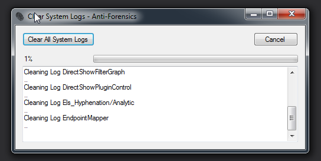
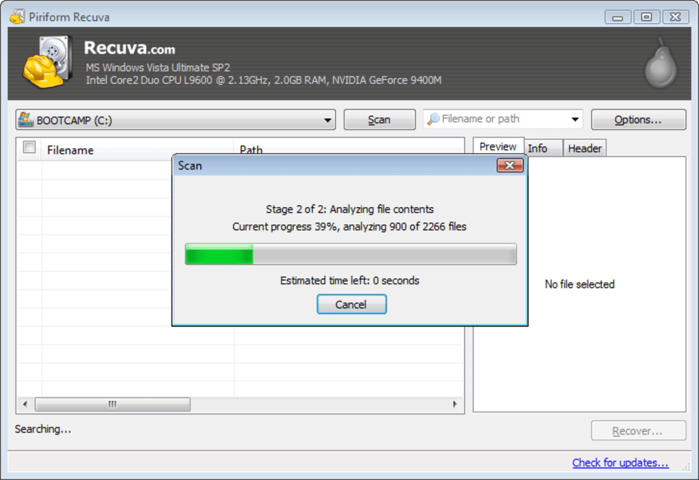

Clearing of Tracks
Description
The final phase of every successful hacking attack is clearing the
tracks. It is very important, after gaining access and misusing the network, that the attacker cover the
tracks to avoid being traced and identified. the attacker clears all traces of logs and information
related to the attack.
Clearing logs
Clear All Windows System Logs. Enables you to retrieve information about event logs
and publishers.
You can also use this command to install and uninstall event manifests,
to run queries, and to export, archive, and clear logs.
for reference of visit HERE

Recovering tracks
Recuva is a convenient way to recover deleted files on your Windows PC. The
freemium application can recover a range of file formats and types, including documents, emails,
pictures, videos, music, and more. Whether you just lost a file or deleted it weeks ago, Recuva is able
to recover information from memory cards, external hard drives, and internal system storage.
